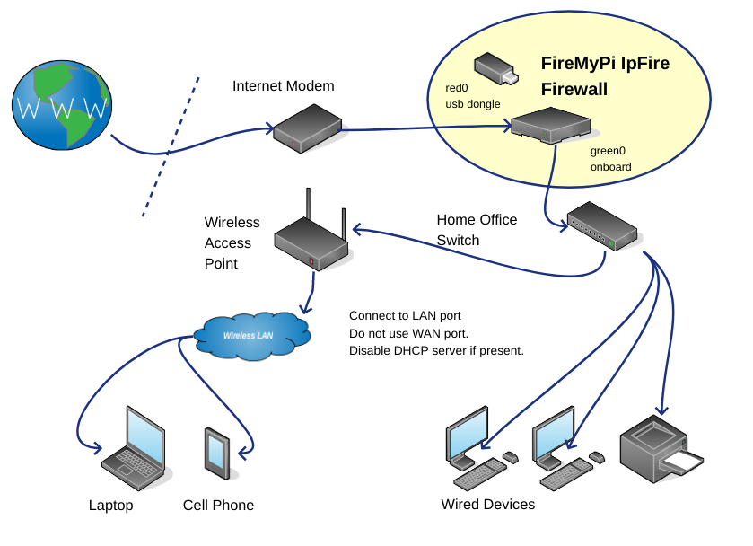

FireMyPi is a configuration tool designed to help you to configure and install the IPFire firewall on your Raspberry Pi. It eliminates the need to run the IPFire setup program and allows you to directly create a micro sd card installation of IPFire that will boot up and run on your Raspberry Pi “out of the box”.
Everyone should have a firewall between their home network and the internet. You may already have a network router device that includes a built in firewall, but those are usually black boxes with limited options that are difficult to configure, maintain, and monitor. One of the great benefits of the IPFire firewall is the IPFire Web GUI which allows you to easily monitor and customize your firewall.
FireMyPi with IPFire allows you to create a low cost firewall on a Raspberry Pi that “just works” without extensive configuration. You can be in control, monitor your network traffic and customize your firewall to meet your needs. For the price of a Raspberry Pi and a USB ethernet dongle FireMyPi allows you to do just that.
FireMyPi configures IPFire for the Raspberry Pi without running the IPFire setup tool. FireMyPi disables the serial interface for IPFire, so no need to edit any uBoot files, and automatically identifies and configures the internal and external interfaces on the Raspberry Pi for IPFire. It also includes the basic settings that would be set with the IPFire setup program as well as advanced options that would be set with the IPFire Web GUI. This saves time for configuration and allows you to have a reviewable and reproducible configuration separate from the firewall. If your micro sd card breaks or gets corrupted, (it happens), you can just rebuild the configuration and get your firewall running again. In fact, we recommend that you create two micro sd’s with your firewall configuration so that you always have a backup ready at hand.
FireMyPi was designed with the ability to configure and connect multiple separate firewall nodes with Ipsec VPN tunnels. If you need to connect multiple home networks, FireMyPi allows you to do this easily.
FireMyPi is built on top of the IPFire firewall program and provides automated configuration to manage one or more firewall machines in a network. The network diagram shows the key parts.

The configuration information for FireMyPi consists of a set of YAML files stored in the config directory and in the secrets directory.
When a build is run, FireMyPi uses the configuration files to create a config and image for the node being built.
The config part of the build creates an overlay that is extracted onto the /var/ipfire directory and overwrites the default IPFire configuration files. The config creation includes a one-time run script that installs the configuration when the firewall is booted.
The image creation step writes the config to an IPFire core image and installs the hooks necessary to run the configuration script. When the image creation step is complete, the result is a pre-configured image that can be written to a micro sd card and booted on the Raspberry Pi.
Refer to the FireMyPi Administrator’s Guide for complete instructions and guidance.
The firemypi-walkthrough.sh script automates the steps in this QuickStart Guide and produces the same single node standalone test firewall. Consider running the firemypi-walkthrough.sh script in lieu of or in combination with this QuickStart Guide. To run the walkthough, simply invoke the walkthrough script.
./firemypi-walkthrough.shThis QuickStart Guide shows you how to configure and build a single node standalone test firewall. Use the standalone firewall configuration if your configuration will contain a single node. This is the most common configuration for a home user.
The node that will be built is a test node using the default prefix: firemypi set in config/system_vars.yml and the default node number 1 which creates a firewall named firemypi1test.localdomain for the 192.168.1.0/24 subnet.
If your home subnet isn’t 192.168.1.0/24 use a node number that matches your subnet. The default IP for this test build is 192.168.1.245.
If this IP is in use on your network, you can change it in config/system_vars.yml by setting green_testhost: to a host number that is free on your network.
mkdir ~/git
cd ~/git
git clone https://github.com/FireMyPi/firemypi sudo apt install git ansible apache2-utils openssl pwgen u-boot-tools cd ~/Download
wget https://downloads.ipfire.org/releases/ipfire-2.x/2.29-core185/ipfire-2.29-core185-aarch64.img.xz cd ~/git/firemypi ./get-image-from-Downloads.sh ./mk-root-secret.sh ./mk-webadmin-secret.sh ./mk-node-config.sh --node 1 ./build-firemypi.sh --node 1 --test --image rpi-imagerNote that for testing, you only need the onboard green0 interface connected.
The dongle that you will use for the external network red0 interface should be plugged into a usb port on the Raspberry Pi, but not connected to the network. This is so that the dongle can be detected and the red0 interface properly assigned. If you have a monitor and keyboard attached to your Raspberry Pi, you can access the console directly and monitor the boot. Refer to Test Network Diagram for the test network connections.
Once you have successfully built a test firewall, spend some time familiarizing yourself with the IPFire Web GUI. The Web GUI is where you can customize and fine tune your firewall. The Logs section of the Web GUI is also helpful to determine where hostile packets are coming from and see how your firewall is protecting your network.
When you are ready to put your firewall in service, it’s easy to build a production firewall. Just run:
./build-firemypi.sh --node 1 --prod --imageRefer to Network Diagram for connections for your production firewall.
The production firewall can be accessed at https://192.168.1.254:444 or by ssh root@192.168.1.254.
FireMyPi uses ansible on linux to build firewalls. If you don’t have a native linux box, here are some options to set up a build environment.
No worries, you’re good to go.
If you have a windows machine and you want to use it to build your firewall, the easiest way to do that is to install and run a linux Virtual Machine on top of windows.
There are several options for a Virtual Machine supervisor so just pick one, install a linux VM and there you go.
Ditto on the windows thing.
You have a Raspberry Pi that you want to use for your firewall, so why not use the same Raspberry Pi to build your firewall with FireMyPi! This is such a classic bootstrap.
Install a linux distro on your Raspberry Pi and then pull down and run the FireMyPi suite. Swap micro sd cards and boot the firewall.
Classic.
FireMyPi has been tested on Raspberry Pi board versions 3B+ (1G), 4B Rev 1.1 (4G) and 4B Rev 1.5. (8G). Memory usage tops out at about 500M so memory wasn’t an issue for any of these boards. FireMyPi identifies the Raspberry Pi onboard ethernet controller and assigns it to green0 based on the drivers used by the onboard nic. Currently FireMyPi will identify and assign onboard nics that use the bcmgenet, lan78xx and smsc95xx drivers. In the home environment we have not seen any issues with connection speed/throughput even when using a dongle on the USBv2 interfaces for the internet connection.
FireMyPi identifies the ethernet dongle and assigns it to red0 based on the drivers used by the ethernet dongle. Currently FireMyPi will identify and assign dongles that use the asix, ax88179_178a, r8152, and pegasus drivers. One thing to note is that some ethernet dongles use the smsc95xx driver. Since some versions of the Raspberry Pi also use the smsc95xx driver, if your dongle uses the smsc95xx drivers, get another dongle or FireMyPi will get confused.
It’s pretty easy to identify the driver that your dongle uses. Just plug the dongle into your linux system and run the following command:
ip --brief addressThe sample output below shows the list of interfaces on a Raspberry Pi 4B running Debian with three dongles plugged in:
lo UNKNOWN 127.0.0.1/8 ::1/128
eth0 UP x.x.x.x/xx xxxx::xxxx:xxxx:xxxx:xxxx/xx
wlan0 DOWN
eth1 DOWN
eth2 DOWN
eth4 DOWNThe interface names in the first column are what to use to identify the driver that linux assigns to the dongle. For the INTERFACE_NAME, run the following command:
ls -l /sys/class/net/INTERFACE_NAME/device/driverThe output of the command will be a link to the driver that the dongle uses. Look at the end of the link and you will see the driver name.
Here are some examples:
Example with Raspberry Pi 4B running Debian with three different dongles plugged in for illustration purposes:
ls -l /sys/class/net/eth0/device/driver
lrwxrwxrwx 1 root root 0 Oct 19 11:17 /sys/class/net/eth0/device/driver -> ../../../../bus/platform/drivers/bcmgenet
ls -l /sys/class/net/eth1/device/driver
lrwxrwxrwx 1 root root 0 Dec 6 14:03 /sys/class/net/eth1/device/driver -> ../../../../../../../../../../../bus/usb/drivers/ax88179_178a
ls -l /sys/class/net/eth2/device/driver
lrwxrwxrwx 1 root root 0 Dec 6 14:04 /sys/class/net/eth2/device/driver -> ../../../../../../../../../../bus/usb/drivers/r8152
ls -l /sys/class/net/eth3/device/driver
lrwxrwxrwx 1 root root 0 Dec 6 14:32 /sys/class/net/eth3/device/driver -> ../../../../../../../../../../../bus/usb/drivers/asixExample with Raspberry Pi 3B+ running IPFire:
ls -l /sys/class/net/green0/device/driver
lrwxrwxrwx 1 root root 0 Dec 31 1969 /sys/class/net/green0/device/driver -> ../../../../../../../../../bus/usb/drivers/lan78xx
ls -l /sys/class/net/red0/device/driver
lrwxrwxrwx 1 root root 0 Dec 31 1969 /sys/class/net/red0/device/driver -> ../../../../../../../../../bus/usb/drivers/ax88179_178aIPFire as configured with FireMyPi takes about 2G of storage on the micro sd card so storage size isn’t really an issue for current micro sd cards. More important is the speed and durability of the micro sd card. For our test and production implementations we are using a reputable brand of U3/A2/V30 rated micro sd cards. And remember to get two so that you have a backup.
We don’t enable the wireless BLUE zone on the Raspberry Pi with FireMyPi, though that can be done with the regular IPFire setup program. The reason is wireless coverage. Standalone wireless access points just have better range.
When setting up the wireless access point, connect the wired home network to the LAN port on the device. This will allow the device to function as an ethernet switch between the wireless and wired portions of the home network.
If you connect the wired home network to the WAN port of the device, the device will get an IP address from the firewall’s DHCP server and will still work, but the wireless network will be separate from the wired network.
FireMyPi uses YAML files to store its configuration information. These files are found in the config and secrets directory. The config directory contains the global configuration for FireMyPi features and specific configuration information for individual nodes.
When FireMyPi runs a build, it first reads config/system_vars.yml. It then reads the config/nodeN_vars.yml file for the node being built. Additional yml files in the config and secrets directories are read as they are needed during the build process.
Because the node configuration file is read after the system configuration. The global variables set in config/system_vars.yml can be overridden on a node by node basis in the node configuration files by copying the appropriate global variable from the the system configuration file to the node configuration file.
YAML has some peculiarities, so when editing any of the yml files, do not change any of the formatting of the files. Leave the indentations and spacing as they are and keep with the same quotation marks that you find in the files.
Below is a list of FireMyPi configuration files and brief description of the configuration variables that they contain. The individual configuration files have additional embedded documentation on the variables and how to set them.
core-image-to-use.yml
Contains the IPFire core image name and number for the core image that will be used by FireMyPi. Do not edit this file manually. It is created by running get-image-from-Downloads.sh.
config/system_vars.yml
The config/system_vars.yml file contains the global configuration variables used by FireMyPi to build firewall nodes.
prefix:
The prefix that will be used to identify and name the nodes built by FireMyPi. The default is firemypi, but we recommend that you change this if you plan on having your firewall name visible on the internet so that bad actors do not know that you’re running a FireMyPi/IPFire firewall.
theme:
The theme used for the IPFire Web GUI.
timezone:
The timezone that will be set for nodes. Note that timezone: is overridden by the timezone specified in node configuration files. You will be prompted for the timezone for a node when running mk-node-config.sh.
language:
The language that will be used by the IPFire Web GUI.
keymap:
The keyboard map that will be used by the firewalls.
domain:
The domain name that will be used for nodes. If you do not intend to have your node names visible on the internet, leave this as localdomain.
green_host:
The host number of the IP address that will be used for all production nodes.
green_testhost:
The host number of the IP address that will be used for all test nodes.
green_dnsserver:
The host number of the DNS server for the home network. This should be the same as green_host: unless you have a separate DNS server on your home network.
enable_journaling:
Turn on file system journaling for the root partition on the micro sd card of the firewall. This is important so that the firewall can recover from power outages.
disable_setup:
Disable the regular IPFire setup program from running on a first boot.
include_ssh:
Configure the SSH server to start and listen only on the internal green0 interface. Also turn on password authentication for the SSH server.
include_httpd:
Configure the web server for the IPFire Web GUI to only listen on the internal green0 interface.
include_dhcp:
Configure and start the DHCP server on the firewall. Make sure that you don’t have another DHCP server running on your home network. The start and end for the DHCP address range can also be set.
include_fireinfo:
Turn on the fireinfo service to send basic hardware and configuration information to the IPFire development team.
include_fwrules:
Include firewall rules that you have written using the IPFire Web GUI and downloaded using the get-fwrules.sh script in the firewall builds.
include_monitor_red0:
Include and start the monitor for the external red0 interface.
The monitor_red0_ variables are used to configure the monitor including the monitoring start delay, the monitoring interval and whether the monitor will attempt to restart the red0 interface if it is down.
include_ddns:
Include Dynamic DNS update for the nodes that are built. Only important if your firewall name will be visible to the internet such as for OpenVPN access or Ipsec VPN tunnels.
The ddns_auth_method variable is used to configure the authentication type for the Dynamic DNS update provider. The secret/ddns-secret.yml file contains the authentication credentials.
include_dnsaddservers:
Add additional DNS servers to your firewall configurations. May be necessary if IPFire does not work with your ISP nameservers.
use_isp_nameservers:
When paired with include_dnsaddservers: can be used to turn off the use of your ISP’s name servers for nodes.
include_locationblock:
Configure and turn on location based IP address blocking for your nodes.
include_ipblocklist:
Configure and turn on public IP Address Blocklist blocking for your nodes.
include_vpn:
Configure and turn on Ipsec VPN tunnels to connect your nodes.
include_ovpn:
Configure and turn on OpenVPN for remote access to your nodes from the internet.
config/nodeN_vars.yml.template
A sample node configuration template. When a node is created using mk-node-config.sh, the nodeN part of the name is replaced by the prefix from config/system_vars.yml and the node number for the node.
timezone:
The timezone for the node. This is an example of a node configuration value that will override the timezone: specified in config/system_vars.yml. You will be prompted for the local timezone for a node that you are creating when running mk-node-config.sh.
wireless_red0:
If true, the firewall will be configured to use the Raspberry Pi wireless nic to connect to the external network. Note that this requires a secrets/nodeN_wireless-secret.yml file which can be created by mk-wireless-secret.sh.
dhcp_static_enabled:
Turns on static (fixed) leases for the node that will be read from the node configuration file. You can get-fixleases.sh to copy DHCP fixed leases from a running IPFire firewall. If static leases are specified in both a nodeN_vars.yml file and a nodeN.fixleases file the leases from both files will be combined to produce the DHCP server configuration.
dhcp_static:
A list of the hostnames, mac addresses and IP addresses for static hosts to be included in the DHCP server configuration when dhcp_static_enabled: true. Sample hosts are included showing the format of the list.
config/nodeN.fixleases
File containing fixed leases copied from a running IPFire firewall using get-fixleases.sh.
config/nodeN.fwrules
File containing firewall rules copied from a running IPFire firewall using get-fwrules.sh.
config/active_vpn_nodes.yml
Contains a list of nodes for active Ipsec VPN tunnels when include_vpn: true.
config/dnsservers.yml
Contains the IP addresses of DNS servers to include in builds when include_dnsaddservers: true.
config/ipblocklist.yml
ipblocklist_enable:
Turns IP Address Blocklists on when include_ipblocklist: true.
ipblocklist_logging
Turns on logging for packets that are dropped by IP Address Blocklist firewall rules.
config/ipblocklist.yml also contains a list of the 16 public IP Address Blocklists that are supported by IPFire. These can be individually turned “on” or “off”. Refer to the IPFire Web Gui for more information about the individual blocklists.
config/locationblock.yml
locationblock_mode:
Specifies the allow-all or block-all mode for the locationblock configuration done by FireMyPi.
locations:
List of two character country codes for locations to either allow or block depending on the locationblock_mode:. Enclose the two digit country codes in quotes.
config/openvpn.yml
ovpn_enabled:
Activate OpenVPN when the firewall is booted.
ovpn_country:
The two digit country code to use when creating the CA and Host certificates for OpenVPN.
ovpn_org:
The organization name to use when creating OpenVPN certificates. This is set automatically by FireMyPi during the build process.
ovpn_dcipher:
The default cipher used by OpenVPN.
ovpn_roadwarrior_enabled:
Enables creation of the OpenVPN Road Warrior for remote administration of the node.
ovpn_roadwarrior:
A list which configures the name of the OpenVPN Road Warrior connection. The connection name is created automatically during the build.
secrets/ddns-secret.yml
ddns_provider:
The name of your provider for Dynamic DNS services.
ddns_token:
The token to authenticate to the ddns_provider: when ddns_auth_method: token.
ddns_username:
The username to authenticate to the ddns_provider: when ddns_auth_method: userpass.
ddns_password:
The password to authenticate to the ddns_provider: when ddns_auth_method: userpass.
ddns_keyid:
The key identifier part of the (key|private) files used to authenticate to the ddns_provider: when ddns_auth_method: keypair.
secrets/nodeN_wireless-secret.yml.template
A sample wireless configuration template. When a wireless configuration is created using mk-wireless-secret.sh, the nodeN part of the name is replaced by the prefix from config/system_vars.yml and the node number for the node.
wireless_ssid:
The wireless network SSID that the red0 interface will connect to if wireless_red0: true in the node’s configuration file.
wireless_passphrase:
The WPA2 passphrase of the wireless network that the red0 interface will connect to if wireless_red0: true in the node’s configuration file. The passphrase is stored in clear text form.
secrets/ovpn-p12-secret.yml
ovpn_p12_password:
The password used to import OpenVPN generated “p12” files to your mobile device. This password is stored in clear text form. Use mk-ovpn-p12-secret.sh to create the ovpn-p12-secret.yml file.
secrets/vpnpsk-secret.yml
vpn_psk:
The pre-shared key used to connect nodes with Ipsec VPN tunnels when include_vpn: true. The pre-shared key is stored in clear text form. Use mk-vpnpsk-secret.sh to create the vpnpsk-secret.yml file.
secrets/root-secret.yml
rootsecret:
The hash value for the root password. Use mk-root-secret.yml to create the root-secret.yml file.
secrets/webadmin-secret.yml
webadminsecret:
The hash value for the IPFire Web GUI admin user password. Use mk-webadmin-secret.yml to create the webadmin-secret.yml file.
secrets/ovpn directory
Contains the per node OpenVPN certificates and configuration information created by FireMyPi when run with include_ovpn: true the first time for a node. If you delete any of the node subdirectories in secrets/ovpn the certificates and configuration information will be recreated the next time you build the node with include_ovpn: true. However, you will need to reload the new road warrior certificate on your mobile device(s).
If you’re already running an IPFire firewall and want to migrate to FireMyPi, you can use get-fixleases.sh and get-fwrules.sh to copy your existing DHCP fixed leases and firewall rules into the FireMyPi build environment.
When run with the ‘–ip’ argument, both of the scripts will attempt to contact and download the fixleases or firewall rules from the target firewall to the config directory files for the node specified. The node configuration file does not need to exist for this and can be created later to build the node.
See FireMyPiCommands for instructions on running get-fixleases.sh and get-fwrules.sh.
Displays the license for FireMyPi and prompts for license acceptance. The script is called from build-firemypi.sh if the license has not been accepted and may also be run standalone.
This script takes no arguments.
Performs the build of FireMyPi/IPFire configurations and images. The script checks for required packages, configuration files and arguments and will exit if conditions are not met. The script runs ansible-playbook to build the configuration first and then if –image is specified will build the image. Build products are stored in the deploy directory along with a file that contains the parameters used for the build.
Root access is required to create a loop device and mount the image file if –image is specified and your sudo password will be prompted for during the build.
During the image build, if root access is not granted, for example if the sudo password is entered incorrectly, the image build will stop at the “Verify become root” task.
TASK [Verify become root - this task will fail if become root fails]
If this happens, you can restart the build so that you can enter the correct password.
–node|-n {N}
The node number of the node to build.
–test|–prod
Build a test or production config/image.
–show [–node|-n {N}]
Calls show-build-environment-sh to show either the global build environment status or the status of the specified node.
–image
Builds a bootable Raspberry Pi image after completing the config build.
–portable
After completing an image, build a small (~35K) portable version of the image customizations that can be applied to an IPFire core image with portable-util.sh to create a complete FireMyPi/IPFire image. This is helpful for managing remote nodes where transferring a fully configured image file (~350M compressed) is not feasible. Note that portable image builds are not encrypted and must be transferred securely.
-f|–force
Forces the build to run even if there is already a config/image in the deploy directory for the node.
Cleans the build environment to remove build products, the core image or secrets from the environment. Use care if you intend to run clean.sh with the –ALL or –SECRETS parameters.
If a build –image has been interrupted and there are leftover mounts for a node, clean.sh will display a warning that the node could not be completely cleaned. The mounts will be cleaned up the next time an image build for the node is completed successfully.
–node|-n {N}
Delete node N from the deploy directory effectively removing all build products for the node.
–allnodes
Delete the build products for all nodes.
–coreimage
Delete the core image related files. You will need to run get-image-from-Downloads.sh to get a new image before running builds.
–SECRETS
Delete all secret.yml files from the secrets directory. You will be prompted for confirmation before doing this.
–ALL
Delete all build products for all nodes, secrets and the core image from the build environment. You will be prompted for confirmation before doing this.
Performs a walkthrough of the FireMyPi build process and creates a test node. The script is intended to be a tutorial but can also be used to prepare the build environment to build a production node.
This script takes no arguments.
Get the DCHP fixed leases that have been added to a running IPFire firewall with the Web GUI. If you have a running IPFire firewall where you have entered fixed leases with the Web GUI, the script will copy those those fixed lease definitions into the build environment so that they will be included in future builds.
If your IPFire firewall was not built as a FireMyPi node, you can still get fixleases from the firewall by specifying the node as the node that you want to copy the fixleases to and the IP address of the firewall.
–node|-n {N}
The node to get the fixleases file from and/or copy to.
–ip {IP}
The IP address to get the fixleases file from.
Get firewall rules that have been added to a running IPFire firewall with the Web GUI. If you have a running IPFire firewall where you have created firewall rules with the Web GUI, the script will copy those those firewall rules into the build environment so that they will be included in future builds.
If your IPFire firewall was not built as a FireMyPi node, you can still get firewall rules from the firewall by specifying the node as the node that you want to copy the firewall rules to and the IP address of the firewall.
–node|-n {N}
The node to get the firewall rules file from and/or copy to.
–ip {IP}
The IP address to get the firewall rules from.
Get a core image that you have downloaded and move it into the FireMyPi build environment. By default, look in ~/Downloads. If IPFire Flash Image(s) are not found there, prompt for the directory to search.
The script will move the most recent Flash Image, based on the file timestamp, to the build environment. If you want to use a previously downloaded Flash Image, you can use touch to update the timestamp on the downloaded file to move it to the top of the list.
This script takes no arguments.
Create the secrets/ddns-secret.yml file which contains the authentication information for Dynamic DNS. Note that all credential information is stored in clear text in the secrets/ddns-secret.yml file.
The information prompted for by the script depends on the value of ddns_auth_method in config/system_vars.yml.
If a secrets/ddns-secret.yml file already exists, the script will prompt for permission to overwite the existing file. If the file is overwritten, a backup copy with a saveDATETIME extention is created.
This script takes no arguments.
Create a new node configuration file in the config directory for the specified node. If run without arguments, you will be prompted for the node number.
Your system time zone will also be displayed and you will be given the option to change it if you are building a node for a different time zone.
–node|-n {N}
Create a node configuration file for node N.
Create the secrets/ovpn-p12-secret.yml file which contains a clear text password that will be used when creating OpenVPN certificate files for the Admin Road Warrior. This password is needed in order to install the certificate on a device that will connect from the internet to the home network. The OpenVPN p12 certificate file is created by reading a user input from the script.
If a secrets/ovpn-p12-secret.yml file already exists, the script will prompt for permission to overwite the existing file. If the file is overwritten, a backup copy with a saveDATETIME extention is created.
This script takes no arguments.
Create the secrets/vpnpsk-secret.yml file which contains a 64 character pre-shared key that will be used for Ipsec VPN tunnels for all nodes build by FireMyPi. The pre-shared key is created with pwgen using the pwgen -s 64 1 command.
If a secrets/vpnpsk-secret.yml file already exists, the script will prompt for permission to overwite the existing file. If the file is overwritten, a backup copy with a ‘saveDATETIME’ extention is created.
This script takes no arguments.
Create the secrets/root-secret.yml file which contains the password hash for the root password that will be used for all nodes build by FireMyPi. The hash is created with OpenSSL using the openssl passwd -6 command.
If a secrets/root-secret.yml file already exists, the script will prompt for permission to overwite the existing file. If the file is overwritten, a backup copy with a saveDATETIME extention is created.
This script takes no arguments.
Create the secrets/webadmin-secret.yml file which contains the password hash for the IPFire Web GUI admin user that will be used for all nodes build by FireMyPi. The hash is created with the Apache2 htpasswd tool using the httpasswd -B -n admin command.
If a secrets/webadmin-secret.yml file already exists, the script will prompt for permission to overwite the existing file. If the file is overwritten, a backup copy with a saveDATETIME extention is created.
This script takes no arguments.
Create a secrets/nodeN_wireless-secret.yml file which contains the SSID and WPA2 passphrase for the wireless network that the firewall will connect to on the red0 interface if wireless_red0: true in the node configuration file.
If a secrets/nodeN_wireless-secret.yml file already exists, the script will prompt for permission to overwite the existing file. If the file is overwritten, a backup copy with a saveDATETIME extention is created.
–node|-n {N}
Create a wireless configuration file for node N.
Merges a FireMyPi portable build to an IPFire image to create a FireMyPi/IPFire image that can be booted on the Raspberry Pi. This is useful if you need to provide a configured firewall when the build facilities are not easily available.
Note that portable builds are not encrypted and must be transferred securely to the remote destination.
To deploy a portable image:
To validate compatibility, the script will confirm that the portable build tar file and IPFire image have the same core number.
Sudo access is required to apply the FireMyPi portable build to an IPFire image.
This script shows a dashboard of either the global status of the build environment or the status of a specific node. It is very helpful for you to determine if anything is missing from your build environment and the status of any nodes that you have built or intend to build.
If a node has leftover mounts from a build –image that failed or was interrupted, show-build-environment.sh will show the affected node in red on the global status dashboard and will show a warning for leftover mounts on the node status dashboard. Leftover mounts will be cleaned up automatically when a successful build is run for the affected node.
–node|-n {N}
Show the build status of the specified node.
–features
Show the FireMyPi features included either at the system level or for a specific node. If run without specifying a node, the features configured in system_vars.yml will be shown. If run with a specified node number, the features effective for the node will be shown. Remember that features specified in the node configuration file will override system_vars.yml.
This script provides instructions an how to write your FireMyPi/IPFire image to a micro sd card.
This script takes no arguments.
FireMyPi stores confidential information needed for the firewall builds in a seperate ‘secrets’ directory. Edit and rename the provided template files to configure secrets or use the “mk”scripts in the build directory.
The ddns-secret.yml file contains the authentication credentials for Dynamic DNS updates.
The nodeN_wireless-secret.yml file contains the SSID and the WPA2 passphrase of the wireless network for red0 to connect to if wireless_red0: true in the ‘config/NodeN_vars.yml’ file.
The ovpn-pkcs12-secret.yml file contains the password that will be used when creating pkcs12 (.p12) key files for the OpenVPN Road Warrior.
The vpnpsk-secret.yml file contains the pre-shared key for Ipsec VPN tunnels.
The root-secret.yml file contains the hashed password for root.
The webadmin-secret.yml file contains the hashed password for the IPFire Web GUI admin.
If the keypair authentication method is used for Dynamic DNS, place the HMAC-MD5 “K{{domain}}.+157+{{ddns_keyid}}.(key|private)” files in the secrets directory.
The secrets/ovpn directory contains the OpenVPN configuration information for nodes including the CA, Host and Road Warrior certificates. It is created automatically at build time when include_ovpn is set to true.
The sections that follow provide information on how to configure specific features in FireMyPi.
If you will be using Ipsec to create VPN tunnels between nodes or if you will be using OpenVPN for Road Warrior access to your network, you will need a public hostname.
FireMyPi allows you to configure Dynamic DNS in order to update your DNS provider with your FireMyPi hostname.
See https://www.ipfire.org/docs/configuration/services/dyndns for more information about this IPFire feature.
FireMyPi implements three different authentication methods for Dynamic DNS updates. Token and Username/Password authentication are native to IPFire, HMAC-MD5 Keypair authentication, which is deprecated, is added by FireMyPi. The method that you choose will be based on the requirements of your Dynamic DNS provider.
The authentication methods are:
token
Authenticate with your provider using a token
userpass
Authenticate with your provider with a username and password
keypair
Authenticate with your provider using a HMAC-MD5 keypair
In config/system_vars.yml:
Set domain: to the domain name that will be updated by your Dynamic DNS provider.
Set include_ddns: true.
Set ddns_auth_method: to the authentication method used by your Dynamic DNS provider.
In secrets/ddns.secrets.yml:
Set ddns_provider: to the name of your Dynamic DNS provider. This must be one of the Dynamic DNS providers listed in “Services/Dynamic DNS” in the IPFire Web GUI. For example: ddns_provider: dyndns.org.
For ddns_auth_method: token
Set ddns_token: to the token provided by your Dynamic DNS provider.
For ddns_auth_method: userpass
Set ddns_username: and ddns_password to the username and password used to authenticate with your Dynamic DNS provider.
For ddns_auth_method: keypair
Set ddns_keyid: to the key identifier part of your HMAC-MD5 keyfiles. This will be the last number in the filename before the .key or .private file extension and is taken directly from the key file name.
Copy your HMAC-MD5 key files to the secrets directory:
K{name}.+157.+{keyid}.key
K{name}.+157.+{keyid}.private
FireMyPi allows you to configure and start the DHCP server for the green0 network. This is a default feature in FireMyPi. Make sure that you do not have any other DHCP servers running on your home network when this feature is enabled.
See https://www.ipfire.org/docs/configuration/network/dhcp for more information about this IPFire feature.
In config/system_vars.yml:
Set include_dhcp: true.
If so desired you can set dhcp_range_start: and dhcp_range_end: to change the range for the DCHP server.
You can also set green_dnsserver: to change the DNS server that will be given to hosts by DHCP. Only do this if you have a separate DNS server that you use on your home network.
In config/nodeN_vars.yml:
You can add static leases to the dhcp_static: list and enable the static leases by setting dhcp_static_enabled: to true. When adding hosts to dhcp_static: follow the example format in the node configuration file.
By default, include_dhcp: sets the DNS server provided to DHCP clients to the address of the firewall node. If you have a separate internal DNS server, this can be changed in config/system_vars.yml by setting green_dnsserver: to the host IP number of the internal DNS server.
IPFire stores fixed leases in the /var/ipfire/dhcp/fixleases file. You can download your current fixed leases from a running IPFire firewall using the get-fixleases.sh script. The script will copy your current fixleases file to the config directory for use with future builds.
If static leases are enabled in config/nodeN_vars.yml and the fixleases file is also present. FireMyPi will combine the two when creating the DHCP server configuration.
You can add additional DNS servers to your FireMyPi firewall by using the include_dnsaddservers feature. This feature allows you to add DNS servers in addition to your ISP DNS servers.
This may be helpful if for some reason your ISP DNS servers don’t work with IPFire or if you are using a separate internal DNS server, such as Pi-Hole.
See https://www.ipfire.org/docs/configuration/network/dns-server for more information about this IPFire feature.
In config/system_vars.yml:
Set include_dnsaddservers: true.
If you do not want to use your ISP DNS servers at all, set use_isp_nameservers: “off” to turn off your ISP domain name servers.
In config/dnsservers.yml:
Set dnsserver1: and dnsserver2: to the IP addresses of the DNS servers that you will use.
If you have an internal DNS server, set dnsserver1: to the IP address of your internal DNS server and set dnsserver2: to 0.0.0.0 so that it will be ignored. In this case, you will also want to set green_dnsserver: to the host IP number of your internal DNS server so that DHCP clients will send DNS requests directly to your internal DNS server.
FireMyPi allows you to turn on the Fireinfo service which sends information about your Raspberry Pi node to the IPFire development team.
We think that this is a good idea because no personally identifying information is included and it helps let the IPFire development team know how many Raspberry Pi’s are out there running IPFire.
See https://www.ipfire.org/docs/fireinfo for more information about this IPFire feature.
In config/system_vars.yml:
Set include_fireinfo: true.
FireMyPi allows you to copy existing firewall rules from a running IPFire firewall to the ‘config’ directory of the build environment so that they can be used in future builds.
Firewall rules can be copied from a running IPFire firewall using the ‘get-fwrules.sh’ script and specifying the target node that the rules will be copied to.
Note that FireMyPi does not give you the ability to write firewall rules, just copy existing rules that you have already written with the IPFire Web GUI to the build environment.
See https://www.ipfire.org/docs/configuration/firewall/rules for more information about writing firewall rules using the IPFire Web GUI.
In the config directory
Use the get-fwrules.sh script to copy firewall rules from a running IPFire firewall to the config directory.
In config/system_vars.yml:
Set include_fwrules: true.
FireMyPi configures the Apache HTTPD daemon to listen only only on the green0 interface so that the IPFire Web GUI is only accessible from the internal network. This is a default feature in FireMyPi.
In config/system_vars.yml:
Set include_httpd: true.
The IP Address Blocklist feature in IPFire allows you to block the IP addresses of known hostile actors on the internet. FireMyPi allows you to configure this feature easily.
See https://www.ipfire.org/docs/configuration/firewall/ipblocklist for more information about this IPFire feature.
FireMyPi uses a preconfigured selection of IP Address Blocklists that is used during the build to configure and activate IP Address Blocklists.
In config/system_vars.yml:
Set include_ipblocklist: true.
In config/ipblocklist.yml:
Turn on each of the IP Address Blocklists that you want included in the build. See the list of blocklists on the Web GUI “Firewall/IP Address Blocklists” page for information about the individual lists.
When you boot for the first time after turning on IP Address Blocklists, expect to see a lot of iptables errors when the firewall is started. This is because the information for the blocklists has not yet been downloaded by IPFire. IPFire will update the blocklist information at regular intervals and after the first boot, you will not see these errors on subsequent reboots.
FireMyPi allows you to include the IPFire Location Block feature in your firewall build.
FireMyPi implements a locationblock_mode: of allow-all or block-all which determines the default configuration of locationblock. The idea behind this is that you typically want to block all locations and only allow a select few or allow all locations and only block a select few.
FireMyPi uses the locationblock_mode: along with a list of locations: to configure and activate Location Block.
See https://www.ipfire.org/docs/configuration/firewall/geoip-block for more information about this IPFire feature.
In config/system_vars.yml:
Set include_locationblock: true.
In config/locationblock.yml:
Set locationblock_mode: to block-all or allow-all.
Set locations: to the locations that you want to block or allow.
FireMyPi includes the ability to monitor the status of the external network red0 interface and, optionally, attempt to restart the interface when it is detected to be down. Monitoring the red0 interface can be helpful if you are having problems with your internet connection or if you want to gather data on your ISP’s uptime.
Log records from the monitor are written to /var/log/monitor-red0.log and are in the format:
monitor-red0.sh: DATE TIME COUNT UP DOWN
In config/system_vars.yml:
Set include_monitor_red0: true.
Set monitor_red0_delay: to the number of seconds to wait before starting to actively monitor red0. The default of 0 starts monitoring immediately.
Set monitor_red0_interval: to the number of seconds between checks of the red0 interface.
If you would like the monitor script to attempt to restart the red0 interface when it is detected to be down, set monitor_red0_restart: true.
FireMyPi allows you to configure OpenVPN to create a single Road Warrior connection that you can use to connect to your home network from the internet.
To do this, FireMyPi generates CA, Host and Road Warrior certificates that are stored in secrets/ovpn/nodeN and are used to configure and activate OpenVPN with a single Road Warrior endpoint.
See https://www.ipfire.org/docs/configuration/services/openvpn for more information about this IPFire feature.
Run mk-ovpn-p12-secret.sh to create a password that will be used to secure the road warrior certificate file.
In config/system_vars.yml:
Set include_ovpn: true.
In config/openvpn.yml:
Set ovpn_country: to your country.
The certificates that FireMyPi uses for OpenVPN are created the first time that a node is built with this feature turned on and are stored in secrets/ovpn/nodeN. These same certificates will be used for subsequent builds of the same node. The reason for this is so that the Road Warrior certificate that you install on your mobile device will not change and you will not have to reinstall the Road Warrior certificate every time you rebuild FireMyPi.
Once this feature is configured and activated, you can download the Road Warrior certificate to your mobile device using the IPFire Web GUI or transfer it with a usb stick. Use the p12 secret that you created to unlock the certificate file to import it.
FireMyPi configures and activates SSH to listen only on the green0 interface so that the firewall is only accessible via SSH from the internal network. FireMyPi also turns on password authentication for SSH. This is a default feature in FireMyPi.
See https://www.ipfire.org/docs/configuration/system/ssh for more information about this IPFire feature.
In config/system_vars.yml:
Set include_ssh: true.
If you are implementing a multiple node network of firewalls, you can connect them with FireMyPi using Ipsec.
FireMyPi implements VPN tunnels using Ipsec with a pre-shared key. The pre-shared key is a 64 character key generated using pwgen. The key is stored in the secrets directory and used by FireMyPi to build the VPN configuration.
FireMyPi will create VPN tunnels for all nodes specified in config/active_vpn_nodes.yml. This creates a mesh network of VPN tunnels between all active nodes.
See https://www.ipfire.org/docs/configuration/services/ipsec for more information about this IPFire feature.
Run the mk-vpnpsk-secret.sh script to generate a random pre-shared key that will be used to authenticate the VPN tunnels.
In config/system_vars.yml:
Set include_vpn: true
In config/active_vpn_nodes.yml:
List the node numbers, two at a minimum, to be configured and activated.
FireMyPi/IPFire provides a DHCP server to assign IP addresses to your network devices. Take this one step further and assign fixed leases to the devices on your network using the IPFire Web GUI. This is important because it will allow you to know what devices are recognized on your network. If a dynamic lease that you’re not expecting shows up, that could be a warning sign of an intrusion.
We use the following numbering plan for our networks:
The advantage of this numbering plan is that we know that any host number under 100 is a recognized fixed host on the network. Any device with a host number in the 100’s range is either a guest or otherwise unrecognized. And any device in the 200’s range is a recognized network or server device. So it makes network host evaluation easy at a glance.
Once you have fixed leases, use ‘get-fixleases.sh’ to download the fixleases file to your build directory so that they will be included in future builds.
One of the great features of IPFire is the Logs/Fw-Loggraphs tabs in the Web GUI that allow you to look at traffic blocked by your firewall by IP, Port or Country. Using these loggraphs gives you a good way to look at how your firewall is protecting your network.
The Location Block feature in IPFire is an easy way to block a lot of traffic that you have no interest in seeing hit your network. It’s easy to configure the block-all mode with FireMyPi and allow the countries that make sense for you.
Use the Logs/Fw-Loggraph (Country) tab in the IPFire Web GUI and you will most likely see that your firewall is getting hits from places that you would never expect.
We recommend that you start with block-all and only allow your country at first. If this causes problems for sites that you need to access, you can incrementally allow those countries.
You can fine tune the locations if needed by editing the config/locationblock.yml file.
IP Address Blocklists are lists compiled by third parties of hostile actors on the internet that are out there searching for networks that they can penetrate.
So use the blocklists. Enable the include_ipblocklist: feature. You can fine tune the lists included by editing the config/ipblocklist.yml file.
When we were selecting the IP Address Blocklists to include by default, we enabled all of the blocklists and selected the ones that were getting hits for our test networks. Some of the lists got zero hits in our testing, possibly due to overlap in the lists. You may want to take a similar approach for your network.
Why not include all of the blocklists and leave it at that? The include_blocklist: feature does increase the boot time for your firewall as the blocklist rules have to be added when the firewall is started. So there is a time element that may need to be considered. But there would be no harm in enabling all of the blocklists if you want to do that.
Devices that Phone Home can be of particular concern for your network for your privacy as well as for your network security. These devices may be smart TV’s, thermostats, outlets, speakers, cameras, essentially any of what are referred to as Internet of Things (IOT) devices. In one test with a smart TV on the network, we found that the smart TV was phoning home at a rate of about once per SECOND! Why does a smart TV need to be phoning home every second and what data is it sending???
So, how do you block devices that are phoning home? Create a firewall rule with the IPFire Web GUI to block the device.
First get the MAC address of the suspect device. You can find this in the Network/DHCP Server tab of the Web GUI probably in the Current dynamic leases section, unless you have assigned a fixed lease for the device. Once you have the MAC address, create a firewall rule to block that MAC address from accessing the internet.
To create the firewall rule, go to the Firewall/Firewall Rules tab and click on New Rule. In the Source section, enter or paste the MAC address for the device in the Source address box. In the Destination section, click on Standard Networks and select RED for the internet. In the Remark box, describe the phone home device, something like ‘That evil smart TV’. Click on the Log Rule checkbox so that you will be able to see the effects of the rule in the logs. Click on Add to add the rule and then on Apply Changes to put the rule into effect.
Once you have the phone home rule in effect, you can look at the Logs/Fw-Loggraphs (IP) tab to see the effects of the rule. In the case of the smart TV phone home that we tested, we saw that close to 90% of the IP address blocks by the firewall were coming from the smart TV.
When you have your Phone Home rules in place, use get-fwrules.sh to pull those rules into your build environment so that they will be in place the next time you use FireMyPi to build your firewall.
FireMyPi modifies the IPFire configuration in order to build and run a customized IPFire image. As such, if the IPFire team changes the format of its configuration in the future, this may break things with FireMyPi.
FireMyPi is intended to run builds as a regular user and prompts for your sudo password when needed. It is not recommended to run FireMyPi as the root user.
FireMyPi config, image and portable builds are not encrypted. Use care and secure or encrypted transport methods when transferring any of these build products as they contain the secrets that you have created for your builds.
By default, FireMyPi uses 254 as the host number for the firewall and 245 as the host number for the test firewall. We use these host numbers because 254 puts the firewall at the top endpoint of the subnet address range and 245 is easy to remember for the test firewall as a companion to the production firewall. These host numbers are set in config/system_vars.yml so that they can be changed if your needs differ.
If a build is interrupted during the create image step, the mounts of the image file may not be removed. If this happens, you will see warnings in the show-environment.sh dashboard. The mounts will be cleaned up the next time you build an image. The warnings are there as a reminder to not <Ctrl-C> out of the build process.
IPFire core images 182 and 183 have a problem with the dhcpcd daemon (version 10.0.4) staying running after initially getting an IP address from the ISP. The dhcpcd problem is apparently more likely to occur on aarch64 devices such as the Raspberry Pi. As a result, after the initial lease time, the firewall loses connectivity to the internet. This can be fixed with a reboot, manual restart of the red0 interface or using the include_monitor_red0: feature with the monitor_red0_restart: option. This bug has been fixed in dhcpcd (version 10.0.6) included in core image 184.
IPFire uses a self-signed certificate. You will need to accept the self-signed certificate in order to access the Web GUI.
When using include_ipblocklist: with FireMyPi, it will take a while for the public IP Address Blocklists to be downloaded after the first boot. If you are monitoring the Raspberry Pi console during the boot, you will see a delay and error messages during the firewall start as IPFire attempts to load the blocklists that are not yet downloaded. When the boot is completed, FireMyPi will start a script to monitor for the blocklist downloads and reload the firewall when the downloads have completed. As a result, on a first boot, you will not start to see packets blocked in the IP Address Blocklist Logs for about 20 minutes. The IP Address Blocklists included by default in config/ipblocklist.yml are those that we’ve found to have the most drops in our testing. The IPFire Web GUI Firewall/IP Address Blocklists tab has links to the blocklist providers where you can get information about the individual blocklists.
When using include_ovpn:, FireMyPi will create the necessary Certificate Authority (CA) and Host Certificates for the node. These are stored in the secrets/ovpn directory. The certificates are created once and reused on subsequent builds of the same node. This means that when a node is rebuilt the certificate used for Road Warrior remote admin access will stay the same and not need to be updated on mobile devices where it has been previously installed.
FireMyPi is built with a combination of shell scripts and ansible playbooks. Everything that FireMyPi does is available in clear text for your inspection.
FireMyPi sets the same root and Web GUI admin passwords for all nodes that it builds. If you want different passwords for different nodes, you can change the passwords on a running node with ‘passwd root’ and/or ‘htpasswd /var/ipfire/auth/users admin’ from the command line.
Well, actually, we’re not set up to take donations, so you’re off the hook!
But seriously, if you like FireMyPi and IPFire, consider donating to the team at IPFire whose work FireMyPi is based on.
And when you donate to IPFire, tell them that FireMyPi sent ya!
(You can do that by putting FireMyPi in Address Line 2 of the donation form. Well, unless you actually have an Address Line 2…)
{kind=link}